TokenMinds 是 Google DeepMind、YouTube 与 Google 多位作者合作的一篇工业推荐系统论文，目标是把 PLUM 中已经用于 item retrieval 的 Semantic ID 思路推进到用户建模侧。论文入口为 arXiv:2606.25147。从公开页面看，摘要页没有给出独立代码仓库；论文主要披露的是 YouTube 多个推荐 surface 上的离线、在线和生产服务经验。它的核心价值不是又做一个离线序列推荐模型，而是尝试回答一个更工程化的问题：当用户历史很长、内容形态横跨长视频和短视频、下游排序系统仍大量依赖 dense feature 时，能不能让一个预训练生成模型同时产出离散的 user token 与可直接接入的 dense embedding。
工业推荐系统长期依赖固定维度 dense user embedding 来压缩用户兴趣，表达粒度受限；而用 LLM 生成自然语言画像又容易停留在主题共现，难以刻画深层序列行为，也很难接回以 item 属性和非文本排序模型为核心的生产链路。TokenMinds 要解决的核心缺口，是把已经在 item 侧证明有效的 SID 语义 token 推进到用户侧，同时保留 dense embedding 对现有下游模型的兼容性。
1. 背景和问题
推荐系统里的用户建模长期有一个张力：系统越大，越需要稳定、低延迟、可复用的用户表征；用户行为越丰富，固定维度向量越容易把细粒度兴趣压扁。YouTube 这样的内容平台同时拥有长视频、短视频、搜索、观看时长、点赞/点踩、设备和时间等信号。传统 Large Embedding Model 以海量 embedding table 记忆高基数 ID，工程上强、延迟可控，也容易接入召回和排序链路；但它的泛化依赖相似 ID 是否在训练中出现过，面对长尾内容、新内容、跨场景用户兴趣迁移时，单个或少数 dense user embedding 难免成为信息瓶颈。论文在 Introduction 中把这个问题说得比较直接：把用户完整兴趣谱压进固定维度向量，可能会丢失细粒度信号。
另一个看似自然的路线是让 LLM 生成文本画像。文本画像可读、可解释，也能把搜索词、观看主题、频道偏好等转成自然语言。但 TokenMinds 对这条路线的判断很谨慎：没有在用户行为序列上充分预训练的 LLM，往往抓到的是主题共现，而不是观看序列里的深层动态；文本输出也不一定能落回目标推荐域里的 item 属性，更难直接进入非文本排序模型。换句话说，文本画像适合给人读，却未必适合给生产 ranker 当高频 feature。对工业系统来说，画像是否“像一句话”不是最重要的，重要的是它能否稳定、低成本、可增量地影响下游排序质量。
TokenMinds 借用的是 Semantic ID 这条线。SID 先在 item 侧把内容 embedding 经 RQ-VAE 量化成层级 codeword 序列，相比随机 video ID，它有两个吸引人的性质：一是相近内容能共享前缀，利于泛化；二是 token space 比频繁 churn 的原始 ID 更稳定，适合建模长时间用户历史。PLUM 已经把预训练语言模型适配到工业级生成式推荐中的 item retrieval。TokenMinds 的问题意识是：如果 item 可以被 SID 表示，用户是否也能被一组 SID-based discrete tokens 表示？这些 token 不是文本标签，而是落在推荐语料里的语义坐标；它们比普通 dense embedding 更稀疏、更可组合，也可能更适合表达多个未来兴趣分支。
这篇论文值得注意，还因为它没有只停在模型结构。作者把 ranking 作为主要下游任务，讨论如何把离散 user token 转成下游 LEM 可用的 continuous embedding，并且在生产系统里通过异步服务把生成成本挪到后台。这个设置很现实：如果一个生成式用户模型必须在每次 scoring 时实时跑完整 encoder-decoder，它很难进入主流有机流量；如果它只能输出文本，既占存储又难接入现有 ranker；如果它只输出 dense embedding，又没有充分利用 SID 的离散语义空间。TokenMinds 的设计正是在这三个约束之间折中。
论文还把跨场景建模作为核心问题，而不是附加 demo。长视频 LFV 与短视频 SFV 的用户行为模式不同，短视频通常是连续浏览、反馈回路更强；长视频更多依赖点击启动和长期兴趣。两个场景的 video ID 空间可能不同，消费节奏也不同，但用户兴趣并不按产品形态完全隔离。作者提到，接近一半用户同时消费 LFV 与 SFV，且前两级 SID 前缀有约 40% 的词表重叠。这说明共享 token space 可能成为跨场景桥梁。TokenMinds 因此不仅要建一个用户表征，还要建一个能统一 LFV/SFV、搜索 query 与 watch history 的表征生成服务。
对推荐系统从业者来说，TokenMinds 的真正看点有三层。第一，它把“用户侧离散 token”作为工业系统的一等 feature，而不是把 token 只用于 item 生成或离线分析。第二，它明确保留 dense embedding，承认下游系统迁移成本和兼容性是必须面对的约束。第三，它用多组在线实验和服务指标把模型问题落到成本、缓存命中、训练/服务 compute 上。论文没有开源内部数据和完整系统，因此无法复现 YouTube 指标；但它提供了一套可以迁移的设计框架：离散 token 负责表达可组合兴趣，dense embedding 负责兼容现有链路，异步服务负责把昂贵的生成过程从实时排序路径中剥离。
2. 方法
2.1 总体框架：从用户行为序列到双输出表征
TokenMinds 采用 encoder-decoder 架构。输入侧把用户 watch history、搜索 query、时间/互动/设备等特征组织成序列；输出侧分成两条线：encoder 的 contextualized representation 被 pooling 成 dense user embedding，decoder 则自回归地产生多个 SID-based user tokens。这个 dual-output 设计是论文的主轴：离散 token 捕捉语义可组合的未来兴趣，dense embedding 保持与现有下游模型的接口兼容。模型本身基于 Gemini V1.5 的 encoder-decoder 形态，实验设置里主模型是 370M MoE encoder 加 370M dense decoder，并从 PLUM 相关的 Continued Pre-Training checkpoint 初始化。这里选择 encoder-decoder 而不是 decoder-only，也服务于双输出目标：encoder 能完整看见用户历史，更适合抽取稳定 dense 表征；decoder 则承担生成式 SID 预测，让离散 token 保持未来兴趣语义。
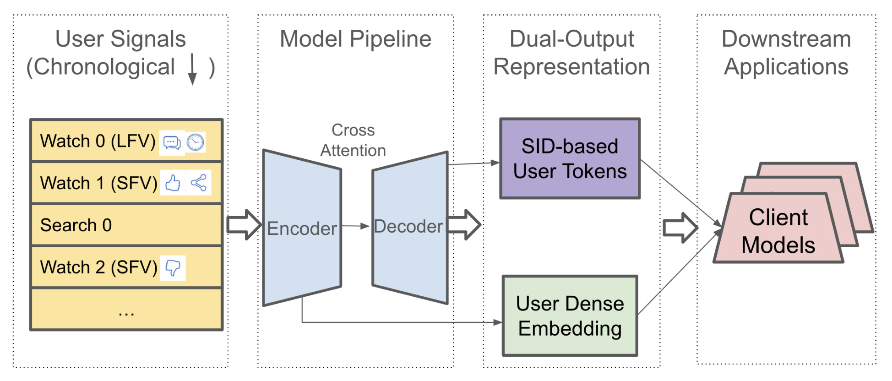
Figure 1 可以按四列读。最左侧是用户信号，包含 LFV/SFV watch、search query 和 engagement features；中间是 encoder-decoder 模型，encoder 处理完整历史，decoder 通过 cross attention 读取 encoder hidden states；右侧的 dual-output representation 把同一套用户行为拆成 SID-based user tokens 与 user dense embedding；最右侧是 client models，也就是下游排序、召回或 LLM-based production systems。这个图的关键不是“用了一个 seq2seq”，而是说明 TokenMinds 没有要求下游系统全部重写。已有模型可以先消费 dense embedding，愿意接入 token 的模型再把离散 SID 序列映射成 embedding 或 cross-attention key/value。
论文对 video representation 的定义来自 SID。每个视频先通过内容 embedding 和 RQ-VAE 得到完整层级 codeword 序列，训练时只保留前缀长度 (L)，而不是把 (L_{\mathrm{full}}=8) 个层级全部放入模型：
符号解释：(W_k) 表示用户历史中的第 (k) 个 watch；(SID_{k,j}) 是这个视频在第 (j) 个 RQ-VAE codebook level 上的离散 codeword；(L_{\mathrm{full}}) 是完整层级长度，论文中为 8；(L) 是用于输入和预测的粗粒度前缀长度。使用前缀的直觉是把视频映射到较粗的语义区域，而不是强迫模型记住具体视频 ID。这样做有两个作用：降低长尾视频和新视频的稀疏性，并避免 user token 退化成少数近期 item 的精确复述。
2.2 训练样本、look-ahead 目标和 SID 前缀损失
训练时，作者把用户观看序列按时间切开。设 (T) 是 cutoff timestamp，(T) 之前的 watch 作为历史，之后 24 小时内的 watch 作为未来窗口。论文并不只预测立即下一个 watch，而是从未来窗口随机采样最多 (N) 个 target watches。这个设计很重要，因为用户建模的目标不是短期 next-item retrieval，而是产出更一般的用户兴趣表征。如果只预测 (W_{t+1})，模型可能过拟合非常短的 session continuation；如果看 24 小时未来窗口，模型被迫学习更稳定的兴趣区域。多目标采样也让 decoder 学到“同一用户可能同时指向多个语义簇”，这正好对应下游 beam tokens 作为多个兴趣点的使用方式。
符号解释：(H_T) 是 cutoff 之前的历史 watch 序列；(F_T) 是 cutoff 后 24 小时内的未来 watch 集合；(W_i) 是从未来窗口采样的训练目标。这个形式把 TokenMinds 和普通 next-watch prediction 区分开：模型在看历史时，要预测一组近未来兴趣，而不是只给下一条视频打分。
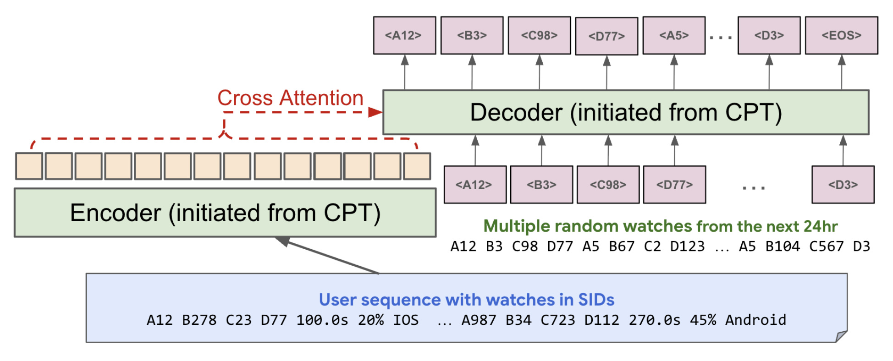
Figure 2 展示了这个训练样本如何进入模型。图底部的 user sequence 混合了 SID 前缀、观看时长、观看比例、设备等硬/软 token。encoder 读入这段历史后，decoder 在 CPT 初始化的基础上，通过 cross attention 读取 encoder output，并自回归地产生多个 near-future random watches 的 SID token。图里画出的多个 target watches 对应论文的 multiple targets。这个流程解释了为什么 TokenMinds 可以同时学习 dense embedding 与 token：encoder 必须产生能帮助 decoder 预测未来 SID 的表征，因此 dense embedding 间接受到来自生成任务的监督；decoder 直接学习离散兴趣 token。
训练目标是论文唯一的核心 loss：
符号解释：(N) 是从未来窗口采样的 target watch 数量；(r(W_i)) 是 watch (W_i) 的 engagement reward，由多个用户信号组合而成；(L) 是 SID 前缀长度；(SID_{i,j}) 是第 (i) 个 target watch 的第 (j) 个 SID 前缀 token；(W_{<i}) 与 (SID_{i,<j}) 表示 decoder 在生成当前 token 前已经条件化的目标和前缀。这个 loss 只作用在 decoder outputs 上，encoder 通过 cross-attention 的梯度被隐式训练。论文还说明，实际实现中可以按 reward proportional sampling 构造样本，然后在式子里等权处理，计算上比给每个目标不同权重更高效。
2.3 跨场景建模：条件 token 与多上下文解码
跨场景部分先处理输入统一。LFV 与 SFV 的 watch 在序列中按时间交错，但每条 watch 前加上离散 condition token，例如 (\langle LFV\rangle) 或 (\langle SFV\rangle)。搜索 query 则加上 (\langle Search\rangle) token 后按时间插入。这样，模型仍在共享 token space 中建模，但能区分“同一用户在不同内容形态下的消费语境”。作者特别提到，condition token 不进入 loss，因为预测它太简单，反而会稀释 SID 预测质量。这个细节说明条件 token 的角色是控制输出上下文，而不是成为模型要优化的推荐目标；真正被优化的仍然是不同场景下的未来 SID 前缀，因此统一训练不会把场景标签本身当成捷径。
多上下文解码解决的是服务端效率问题。统一模型在 serving 时需要为不同场景生成不同 user tokens。朴素做法是 LFV 跑一遍、SFV 再跑一遍，encoder 处理同一段历史的成本被重复支付。TokenMinds 的做法是先共享一次 encoder pass，然后在 decoder 侧引入 context stage，为每个目标场景构造一个 sub-batch，各自用对应 condition token 初始化，再并行 beam search。也就是说，encoder hidden states 被复用，decoder 输出变成 scenario-specific。
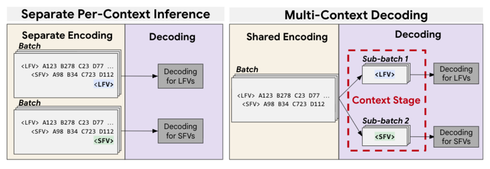
Figure 3 左边是 separate per-context inference：LFV 和 SFV 各自编码、各自解码，历史序列被重复处理。右边是 multi-context decoding：shared encoding 只做一次，decoder batch 在 context stage 分裂成 LFV 与 SFV 的 sub-batch，再分别解码。这个图解释了 Table 6 里 serving compute 下降的机制来源。它不是单纯减少模型参数，而是把最重的历史编码部分做共享。对线上推荐来说，这种共享很关键，因为用户历史可长达上千条 watch，encoder 的 prefill 成本通常比生成少数 token 更稳定、更重。
这里还有一个容易忽略的边界：multi-context decoding 共享的是 encoder history representation，不是把 LFV 与 SFV 的输出混成同一个 token。decoder 仍然由不同 condition token 初始化，因此可以在同一用户兴趣底座上生成场景相关的离散表示。这样下游 LFV ranker 和 SFV ranker 拿到的不是一份模糊的平均用户画像，而是带场景条件的 user tokens。
2.4 下游接入：把离散 user token 变成排序模型可用信号
SID-based user token 不能直接扔给所有现有 ranker。论文评估了三类 token-to-embedding 方法。第一类是 Prefix Embedding Mapping：把预测出的 SID 前缀映射回生成该前缀的原始内容 embedding，如果多个视频共享同一前缀，就对这些视频 embedding 做 mean pooling。这个方法不需要下游重新学习 token embedding，但它是静态映射。第二类是 N-gram Embedding：把 SID 序列切成固定长度子词，例如 codeword pair，再为这些子词学习 embedding。第三类是 SPM Embedding，用 SentencePiece 从 item distribution 中学可变长度子词。后两类被作者统称为 Learnable Embeddings，因为它们在下游模型中端到端训练。
服务时，decoder 通过 beam search 为每个用户生成 (B) 条 SID 序列，每条代表一个 predicted future interest。要形成下游可用向量，可以对 (B) 个 SID embeddings 做 attention-weighted pooling、mean pooling、max pooling 或 top-(k) concatenation。论文说不同聚合方式性能接近，说明收益更多来自 token 本身的信息，而不是特定 pooling 技巧。这个结论对工程接入很有用：如果已有排序模型难以改 cross-attention，也可以先用较保守的 pooling 方式接入 token embedding。反过来，如果下游模型已经支持 candidate-to-user attention，就可以把 token embeddings 当成一组用户兴趣 memory，让候选 item 主动选择相关兴趣，而不是只读取一个全局用户向量。这个设计也让同一批上游用户 token 能服务多个业务目标：不同排序模型可以在自己的训练目标下重新解释这些离散兴趣，而不是要求上游模型提前决定某个 token 应该对哪类候选负责。
从接口设计看，这一节其实把 TokenMinds 分成了“上游表征工厂”和“下游消费协议”两层。上游只承诺产出 beam SIDs 与 dense embedding；下游可以选择静态映射、可学习子词 embedding、pooling 或 attention 接入。这样的分层降低了迁移风险：一个 surface 可以先只接 token-only feature 测增量，另一个 surface 可以把 dense embedding 与 token embedding 同时接入。论文后续在线结果也正是围绕这些接入粒度展开，而不是假设所有生产模型一次性改成同一种结构。更重要的是，这种接口把表征学习目标与下游业务目标部分解耦：TokenMinds 负责学习通用用户兴趣，下游 ranker 再决定哪些 token 对当前候选、当前 surface 和当前满意度指标有用，避免上游模型被单一排序目标过早绑定。
2.5 工业服务：异步刷新、缓存命中和实时排序解耦
TokenMinds 的服务设计是另一处重点。论文没有让生成模型在实时 scoring path 中同步执行，而是构建在 User Behavior Service 框架上，异步生成 user embeddings 和 tokens，并写入 key-value store。下游 scoring request 来时，client 先查缓存；如果表示有效，就直接取出并喂给排序模型；如果过期或缺失，则触发后台 refresh service 读取最新 history、运行 TokenMinds、再写回缓存。这个结构使实时排序的 latency 和 cost 不随 TokenMinds 模型复杂度线性增长。
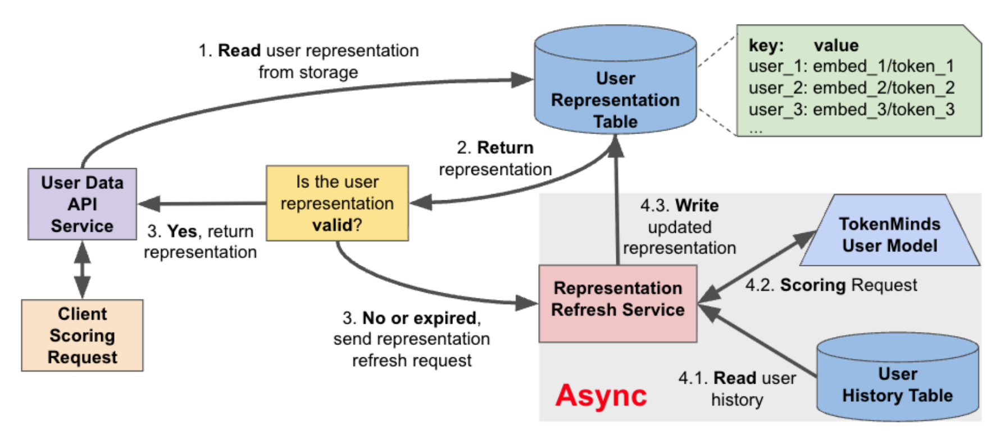
Figure 4 里的编号展示了请求路径。client scoring request 首先查 User Representation Table，命中就返回 representation；没有命中或过期时，不是阻塞当前 scoring，而是发送 representation refresh request 到 Refresh Service。Refresh Service 读取 User History Table，再调用 TokenMinds User Model，最终把新 representation 写回缓存。这个图值得放在方法章，因为它是 TokenMinds 能上 full user traffic 的前提。如果没有这个异步层，encoder-decoder 生成用户 token 的成本会直接压到线上排序延迟，模型贡献再好也很难在主流流量中常驻。 这个服务划分还让 representation freshness 成为可调参数：系统可以用刷新周期、过期策略和后台容量控制成本，而下游排序只需要处理“当前可用的用户表示”。
3. 实验结果
3.1 离线表征质量：训练目标、初始化和搜索信号
论文的离线实验先问一个基础问题：生成的 user tokens 是否真的能预测未来 SID，而不是只复述最近 item？Table 1 使用两个评估协议。Session Recall 用接近完整历史预测最终 watch；Cold-Start Recall 用截断历史预测未来窗口中的随机 watch。两者都生成 top-10 SID sequences，并计算 Recall@10。完整 TokenMinds 在 Session Recall 上为 0.291，在 Cold-Start Recall 上为 0.210。
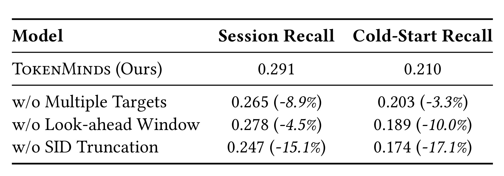
Table 1 的三组消融对应方法章的三个设计。去掉 multiple targets 后，Session Recall 从 0.291 降到 0.265，Cold-Start Recall 从 0.210 降到 0.203，说明多个未来目标不仅提高训练效率，也给模型更丰富的兴趣监督。去掉 look-ahead window 后，Cold-Start Recall 降到 0.189，下降幅度达到 -10.0%，说明只看 immediate next watch 对泛化不够。去掉 SID truncation 后，两个指标都明显下降，尤其 Cold-Start Recall 到 0.174，下降 -17.1%。这说明全长 SID 太细，容易让模型接近 item memorization；粗粒度前缀反而更适合表达可迁移兴趣。
Table 2 进一步拆初始化和搜索 query。这里所有数字都是相对 random initialization 且没有 search 的提升。CPT 没有 search 时比 random 更好，Pre-Trained Gemini 也比 random 好，但最强的是 CPT 加 search queries：Session Recall@10 提升 +23.5%，Cold-Start 提升 +31.5%。这组结果支持两个判断：SID-specific continued pre-training 比通用预训练更贴近推荐语料；搜索 query 是 watch history 之外的显式意图信号，且越强的初始化越能利用它。
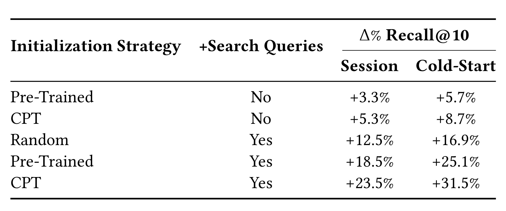
这张表的读法要注意列之间的组合，而不是只看最后一行。Random+Search 已经能带来 +12.5% 和 +16.9%，说明 query 本身很强；Pre-Trained+Search 到 +18.5% 和 +25.1%，说明通用序列能力帮助模型融合文本意图；CPT+Search 继续提升到 +23.5% 和 +31.5%，说明 SID grounding 与文本搜索并不是替代关系，而是协同关系。对实际系统来说，这意味着“用户 token 化”不能只看 watch item 序列，搜索词这类明确表达意图的行为也应该进入同一 token space。
这组实验也解释了为什么论文没有把 query 当成额外文本特征塞给下游 ranker，而是放进 TokenMinds 的输入序列中统一建模。query 的作用不只是增加一个可解释字段，而是帮助生成模型在解码未来 SID 时看到用户显式意图与历史观看之间的关系；因此它和 CPT 初始化一起提升冷启动预测，而不是只提升已有兴趣的同义扩展。
3.2 token 多样性和 dense embedding 稳定性
准确率之外，作者还验证 beam search 是否塌缩。因为每个 decoded SID 都被当成一个未来兴趣信号，如果 40 条 beam 只是同一个前缀的重复版本，下游模型接入 token 的收益会很有限。论文定义了两类多样性指标：SID Token Collision Rate 衡量某个位置 token 相同的频率；SID Prefix Duplication Rate 衡量前缀重复程度。作者在 5K 用户样本上，把生成 token 与 24 小时 look-ahead 中的 ground-truth watches 做 CDF 对比，并通过下采样控制集合大小差异。
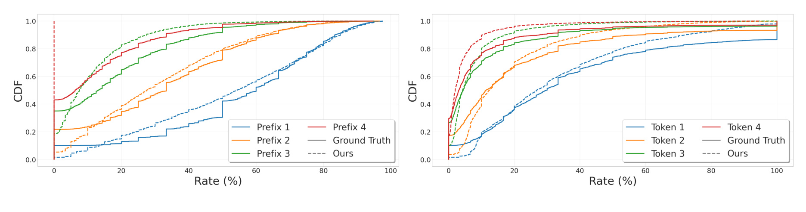
Figure 5 左图看前缀重复，右图看各位置 token collision。多条彩色曲线表示不同 prefix/token index，Generated SIDs 与 Future GT 的分布接近，而 Current Truth 的重复程度更高。这个现象说明模型不是把当前历史里的相邻 item 原样搬出来，而是在未来兴趣空间里生成一组相对分散的语义候选。对下游 ranker 来说，多样性很重要：token-only feature 如果能覆盖多个未来兴趣分支，就可能补充 dense embedding 中被平均掉的细粒度偏好。
Dense embedding 的稳定性则用扰动实验衡量。作者对 2K 个随机用户生成完整历史 embedding (E_A)，再随机丢弃部分 watches 得到扰动 embedding (E_A^*)，并与另一个随机用户 embedding (E_B) 比较：
符号解释：(\mathrm{Sim}) 是 cosine similarity；(E_A) 是用户 A 的完整历史 embedding；(E_A^*) 是同一用户历史扰动后的 embedding；(E_B) 是随机用户 B 的 embedding。这个结果说明 encoder dense output 对小扰动稳定，同时又能区分不同用户。它支撑 dual-output 中 dense embedding 的必要性：TokenMinds 不只是产生离散 token，encoder 侧也能给现有系统提供可用的连续用户向量。
3.3 在线效果：token 如何接入，以及是否补充 dense embedding
在线实验先做 token adaptation pivot。作者用 110M 轻量模型在 SFV surface 上比较 Prefix Embedding Mapping 与 Learnable Embedding。结果是 LE 在 Engaged Users 上 +0.08%，Satisfied Engagement 上 +0.22%；EM 则为 +0.07% 和 -0.02%。这说明虽然 EM 更容易解释、迁移成本低，但在下游排序任务中，随机初始化并端到端学习的 token embedding space 更能适应具体目标。
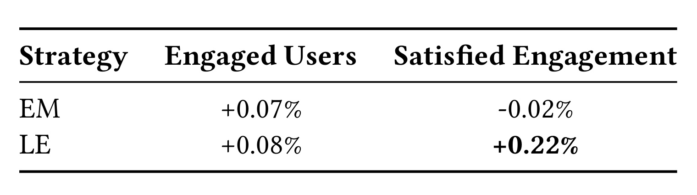
Table 3 的结论不能夸大成“静态映射没用”，因为 EM 的 Engaged Users 仍有小幅正向；但它显示 LE 对满意度指标更稳。原因可能是 Prefix Embedding Mapping 使用的是生成 SID 时的内容 embedding 平均，保留了语义邻域，却未必对当前下游 ranker 的目标最优；LE 让排序模型自己学习 token 子词的重要性，更容易把 user token 转成可优化 feature。论文后续因此统一采用 LE。
主线上结果在 Table 4。作者比较 embed-only、token-only、embed+token 三种表示在 SFV 和 LFV surface 上的效果。SFV 上，embed-only 对 Engaged Users 为 0.00%，Satisfied Engagement 为 +0.05%；token-only 为 +0.04% 和 +0.40%；embed+token 为 +0.11% 和 +0.62%。LFV 上提升较小，但 embed+token 仍为 +0.02% 和 +0.08%。论文还补充说 token-only 在另外两个 LFV surfaces 上也有统计显著收益。
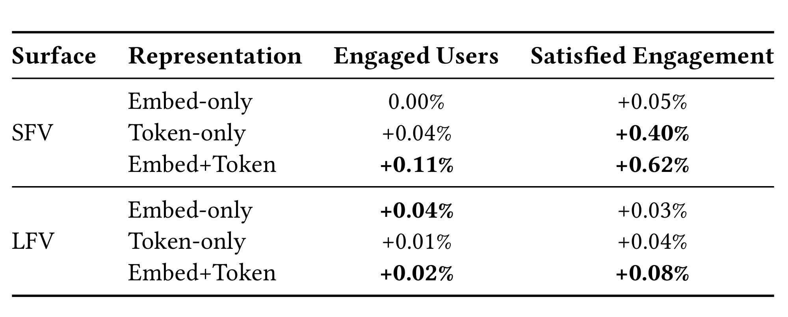
Table 4 是这篇论文最关键的生产证据。它说明 token-only 已经能给下游带来增量，而 embed+token 在 SFV 上明显强于两者单独接入，验证了 RQ2 的“互补价值”。从推荐系统角度看，dense embedding 像是对用户历史的平滑压缩，适合稳定偏好；SID token 更像一组可展开的未来兴趣语义点，适合让下游模型关注多个候选方向。二者叠加的收益大于单一路径，说明它们没有完全重复。
表里 LFV 的提升小于 SFV，也不应该被忽略。它说明 TokenMinds 的增益具有 surface 依赖性：短视频连续消费更依赖近期兴趣和多样化 beams，因而 token 的边际价值更明显；长视频链路可能已有更强长期兴趣特征，或者目标函数更受候选池和内容供给影响。这个差异提醒工程接入时不能只看一个全局平均指标，而要按场景评估 token、embedding 和组合特征的实际收益。
3.4 成本、缓存和跨场景收益
线上质量必须和成本一起看。论文披露，TokenMinds 同时生成 token 和 embedding 每用户约 339ms，但这个开销被后台处理吸收；离散 token representation 只需 1,280 bytes，而 dense embedding 需要 4,608 bytes，存储下降约 72%；系统在多个生产 surfaces 上每秒 1.44M read requests 下达到 96.4% cache hit rate。存储差异可以写成：
符号解释：4,608 bytes 是 dense embedding 的存储大小，1,280 bytes 是 discrete token representation 的大小；分子表示每用户节省的字节数，分母是 dense baseline。这个公式不是模型 loss，但它对生产推荐系统同样核心，因为 user representation 是全量用户级 feature，存储和读取成本会被用户规模放大。
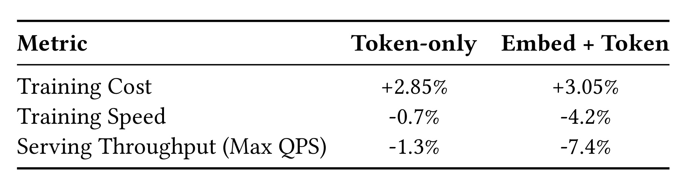
Table 5 说明 downstream integration 的代价。Token-only 让 training cost 增加 +2.85%，training speed 降 -0.7%，serving throughput 降 -1.3%；Embed+Token 的 training cost +3.05%，training speed -4.2%，max QPS -7.4%。这组数字提醒我们，token 接入并非免费，但 token-only 的成本相当可控。Embed+Token 在 SFV 上收益最大，也带来更高 serving throughput 代价，因此工程上可能需要按 surface、目标指标和容量预算选择接入方式。
跨场景实验比较 unified LFV/SFV 模型与基线。Table 6 Panel A 显示，相比 LFV-only baseline，统一模型在 SFV/LFV 上的 Engaged Users 基本不降，Satisfied Engagement 小幅正向，Fresh Engagement 分别 +0.33% 和 +0.19%。Panel B 显示，和两个 separate models 相比，upstream training compute 减少 50%，upstream serving compute 减少 31%。这组结果回答 RQ3：一个统一模型可以减少 compute，同时不牺牲核心质量，并提高新鲜内容互动。
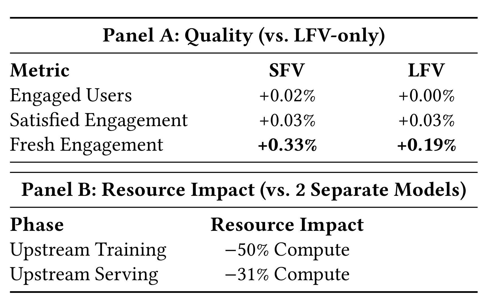
Table 6 的细节很值得看。统一模型把 LFV 和 SFV 放进同一个固定长度输入序列，按直觉会减少可用于 LFV 的历史容量；但核心指标没有下降，Fresh Engagement 反而提升。作者的解释是，SFV 行为补偿了 LFV context 被压缩的损失，也提供了更多近期兴趣信号。这个结果对多业务推荐系统有启发：当不同业务场景共享部分语义空间时，强行维护多个独立用户模型可能浪费训练和服务资源；共享 encoder 加 scenario-specific decoding 可能是一种更有效的组织方式。
同时，Table 6 也给出了一个质量门槛：跨场景统一不能只用节省 compute 证明自己，必须证明核心 engagement 不被稀释。这里 Panel A 的 engaged users 与 satisfied engagement 基本保持中性或小幅正向，Panel B 再给出训练和服务资源下降，二者合在一起才构成上线理由。如果只看到 -50% training compute，而没有质量侧对照，统一建模很可能只是把两个任务互相干扰后变便宜。
3.5 scaling studies：模型结构、历史长度和 batch size
最后一组实验用加速离线协议做 scaling studies：模型在 7 个随机打乱日上训练，在第 8 天顺序评估。作者比较了 Balanced MoE、Balanced Dense 与 Unbalanced Dense 三类 warm-start 变体。Figure 6 横轴是 training Iso-FLOPS，纵轴分别是 Training Recall 和 8th-Day Recall。论文结论是，Unbalanced Dense 虽然训练 recall 低于 Balanced Dense，但 8th-Day Recall 接近；在 matched FLOPS 下，Balanced MoE decoder 的 8th-Day Recall 优于 dense counterpart。
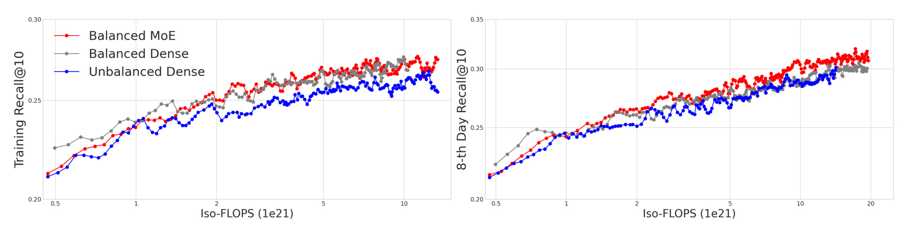
Figure 6 的工程含义是，训练集上的高 recall 不一定等于次日泛化最好。Unbalanced Dense 暗示一种可行方向：heavy encoder 低频刷新，负责稳定历史压缩；lighter decoder 高频刷新，负责近期行为。MoE decoder 的优势则说明，稀疏专家路由在未来兴趣生成上可能比同等 FLOPS 的 dense decoder 更有效。这里的证据还只是离线 scaling study，但它给 TokenMinds 的下一步系统优化提供了方向。
Figure 7 研究 user history length。论文说 LFV 和 SFV 的 8th-Day Recall@10 大约在 1K watches 左右开始饱和，扩展到 2K 对 SFV 甚至可比或略差。这对长序列推荐尤其重要，因为“历史越长越好”在工程上并不总成立。超长历史会挤占输入长度、增加 encoder cost，也可能把过旧兴趣混入当前偏好。
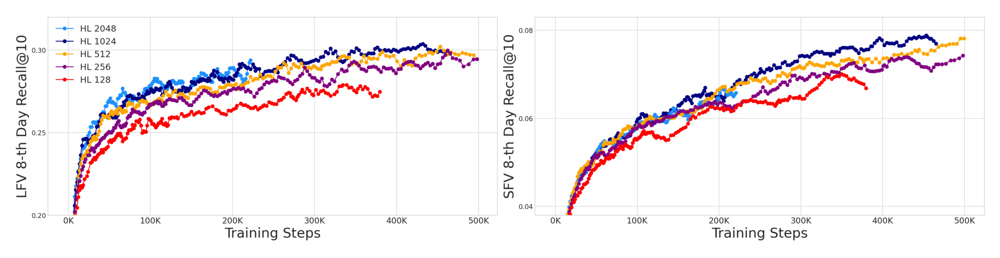
Figure 7 左右两图分别对应 LFV 与 SFV。不同曲线代表不同 history length，随训练 step 增长，1K 左右的曲线已经接近高长度设置，2K 并没有稳定拉开优势。这个图支持 TokenMinds 在主实验里使用最近 1,200 watches 和 (S=10) 个 search queries 的设置。作者还做了 batch size scaling：以 4K 为 baseline，8K 的 8th-Day Recall@10 在 SFV/LFV 上提升 +2.5%/+5.5%，16K 提升 +7.6%/+13.7%。学习率按标准 (\sqrt{N}) 规则缩放：
符号解释：(\eta_N) 表示 batch size 为 (N) 时的学习率尺度；(\sqrt{N}) 规则表示 batch 变大时，学习率按 batch size 的平方根调整。这里的重点不是这条规则本身，而是 TokenMinds 与 PLUM 一样受益于大 batch：更大 batch 在同一训练窗口内加快收敛，并改善用户表征质量。
4. 总结
4.1 我的判断
TokenMinds 的价值在于把三个原本分散的方向串起来：预训练生成模型、Semantic ID、工业级用户表征服务。它没有把 LLM 当成“写用户画像”的工具，而是把 LLM backbone 当成一个能在 SID token space 中做序列建模的生成器。这个选择很务实：用户画像若只输出自然语言，很难直接优化排序目标；SID-based user tokens 则既是离散语义表示，又能通过 learnable embeddings 接入 ranker。论文最有说服力的结果也不是某个离线 Recall，而是 Table 4 中 token 与 dense embedding 的互补收益，以及 Table 6 中统一跨场景模型的 compute 降低。
更进一步看，TokenMinds 把“用户兴趣”拆成两种表示：dense embedding 提供连续、稳定、兼容旧系统的压缩；SID token 提供多个可组合、可映射到 item semantic space 的兴趣点。这个拆分比单一 user embedding 更接近真实推荐链路：召回、粗排、精排、重排可能需要不同粒度的用户信号。对内部工程迁移来说，可以先用 token-only 或 embed-only 做低风险接入，再在收益明确的 surface 上尝试 embed+token 或 cross-attention。
4.2 工程启发与复现建议
如果要复现或迁移 TokenMinds，第一步不是直接训练 encoder-decoder，而是先确认 item SID 质量。SID 前缀是否稳定、是否能覆盖 head/tail 内容、是否和搜索 query/内容属性可对齐，会决定 user token 是否有意义。第二步是设计 look-ahead window 和 reward sampling。论文使用 24 小时未来窗口、最多 (N=15) 个 target watches，并用 engagement reward 引导目标选择；不同业务需要按 session 长度、内容生命周期和核心指标重定这个窗口。第三步是确定下游接入路径。Table 3 表明 learnable embeddings 更适合在线目标，但它需要下游 ranker 训练和容量支持；Prefix Mapping 可以作为更保守的冷启动方案。
服务侧的启发同样重要。TokenMinds 上线依赖异步生成和缓存，而不是实时运行生成模型。任何类似方案都应先测 cache hit rate、representation staleness、refresh cadence、用户冷启动和缺失表示回退策略。论文披露的 96.4% cache hit rate 是系统可行性的关键条件；如果业务中用户行为变化更快或缓存命中低，339ms 的后台生成成本可能很快转化为服务压力。
4.3 局限与后续跟进
这篇论文的第一类局限是可复现性。数据、YouTube surfaces、reward 组合、下游 ranking models 和完整服务系统都不可公开，外部读者只能复现方法形态，无法复现线上指标。第二类局限是指标口径。Engaged Users、Satisfied Engagement、Fresh Engagement 都是内部生产指标，论文给出相对变化，但没有披露业务权重、显著性细节和长期留存影响。第三类局限是用户隐私与治理。用户 token 虽然不是自然语言画像，但仍来自长期行为历史，如何控制可逆性、敏感兴趣泄露和跨场景使用边界，论文没有展开。第四类局限是模型维护成本。CPT、连续训练、SID 词表、异步缓存和下游 LE embedding 共同构成一套复杂系统，单点效果好不代表整体维护简单。
后续我会优先跟三件事。第一，关注 PLUM 与 TokenMinds 之间的 SID 词表和 CPT recipe 是否有更多公开细节，因为这是 user token 成败的底座。第二，关注是否有论文把 SID-based user tokens 用在召回、RAG 个性化记忆或 LLM reranking 中，尤其是 token 与 dense memory 的互补机制。第三，关注工业系统如何评估 user representation staleness：如果用户短期兴趣强烈变化，24 小时 refresh cadence 与 beam tokens 是否足够敏感，可能决定这类系统能否跨出 YouTube 的具体场景。总体看，TokenMinds 不是“用大模型替代推荐系统”，而是把预训练模型变成一个可后台运行、可缓存、可接入现有排序链路的用户表征工厂。